Introducció
- Control porta el campionat: pilots, equips, verificacions, quotes i classificació. No cronometra; això ho fa PitWall Manager.
- Funciona a l’ordinador (Windows, Mac i Linux) i en tauletes o mòbils Android.
- A dalt a l’esquerra tries el campionat amb què treballes. Si encara no en tens cap, prem Crear campionat.
Veure tots els detalls (per a qui ho vulgui saber tot)
PitWall Control és el gestor de campionats de slot: la part administrativa i de temporada. No cronometra curses (d'això se n'encarrega PitWall, el cronometrador); Control manté tot el que envolta la competició — pilots, equips, catàlegs tècnics, verificacions, crèdits, tresoreria i classificació — i es comunica amb PitWall per enviar les tandes i portar els resultats.
- S'executa a l'escriptori (macOS, Windows i Linux) i a l'Android (tauleta o mòbil). Les dades viuen al mateix dispositiu; si vols compartir-les entre diversos, fes servir la còpia a Google Drive. Per verificar entre diversos alhora el dia de cursa, mira Verificar en equip.
- La navegació principal, a l'esquerra, depèn del campionat actiu (el tries a dalt, al requadre vermell): Inici, Pilots, Equips, Proves, Resum de verificacions (les verificacions de la prova en una graella), Classificació, Tresoreria i Crèdits. Tresoreria i Crèdits només apareixen si el campionat els fa servir.
- A baix hi ha els accessos generals: Verificació lliure, Campionats, Catàlegs, Google Sheets, Plantilles CSV, Novetats (l'historial de versions) i el canvi de mode clar / fosc. Sota de tot, la versió instal·lada.
- Si encara no tens cap campionat, la pantalla d'inici t'ofereix Crear campionat o Només verificar cotxes (la verificació lliure).
Configures el campionat i els seus catàlegs una vegada, i a partir d'aquí només inscrius, verifiques, cobres i publiques: PitWall Control arrossega les regles per tu.
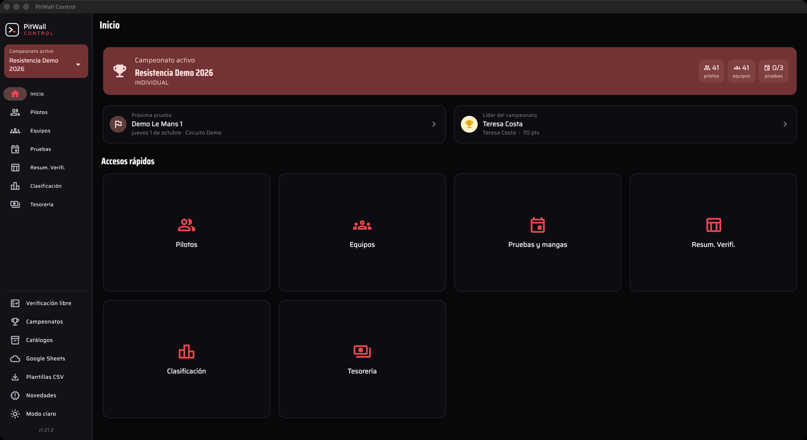
Crear el campionat
- Tot comença creant un campionat a Campionats.
- Posa-hi nom i any, tria el format (individual, parelles o 24h) i marca les copes que hi corren.
- Si voleu portar crèdits o cobrar quotes, activa-ho aquí. Es configura una vegada per a tota la temporada.
Veure tots els detalls (per a qui ho vulgui saber tot)
Tot penja d'un campionat. Des de Campionats en crees un de nou i defineixes com funciona. El campionat que tries com a actiu és el que veus a tota l'app. Un campionat nou comença en blanc: sense copes marcades ni quotes, perquè hi posis les teves.
Dades bàsiques
- Nom i any.
- Format: Parelles (2 pilots per equip), Individual (1 pilot) o 24h (equips de resistència, de fins a 6 pilots).
- Copes / categories: marca les classes que corren (p. ex. LMP, GT3, GRUP C) o afegeix-n'hi una de nova si no hi és. N'has de marcar almenys una per desar. Es fan servir per classificar i per filtrar els catàlegs a la verificació.
- Amplada d'eix: màxim davanter i posterior (mm) per copa. Deixa-ho buit si en aquesta copa no es comprova.
Regles
- Crèdits: activa el sistema d'handicap, amb el seu topall de regularització. En crear el campionat pots importar els crèdits d'un altre campionat. Si el desactives, s'amaguen tots els camps i la secció Crèdits.
- Tresoreria: activa el cobrament de quotes per prova. Indica el Pagat (la quota total, obligatòria) i el seu desglossament: el que va a la coordinadora i el que va al club. Coordinadora + Club han de sumar el Pagat; si no, no et deixa desar.
- Puntuació: nombre de descarts (les proves pitjors que no compten). La taula de punts s'edita a Classificació.
Motor (verificació)
Aquí decideixes d'on surten els motors del campionat, perquè a la verificació no calgui marcar-ho cada vegada:
- Sorteig: l'organització sorteja els motors. A la verificació només s'apunta el número de motor.
- Propi: cada equip porta el seu motor. A la verificació es tria del catàleg i es comproven les RPM i els uMs.
- Mixt: a cada verificació es marca si el motor és d'organització o propi.
Amb Sorteig o Mixt apareix el rang de números que se sortegen (motor des de / fins a), necessari per sortejar. En crear el campionat cal triar una de les tres opcions.
Fabricant, marca i estat
- Limitar fabricant: per a campionats monomarca. Tries les marques permeses i, a la verificació, els desplegables de marca de pinyó, corona, llandes i trena només ofereixen aquestes; qualsevol altra de ja desada surt com a infracció.
- Marca als PDF: títol de capçalera i lema del peu propis del campionat. Si els deixes buits es fa servir la marca per defecte.
- Campionat visible (només els visibles surten al selector) i Campionat finalitzat (temporada tancada: la classificació ordena per nets i s'habilita la bonificació de tancament).
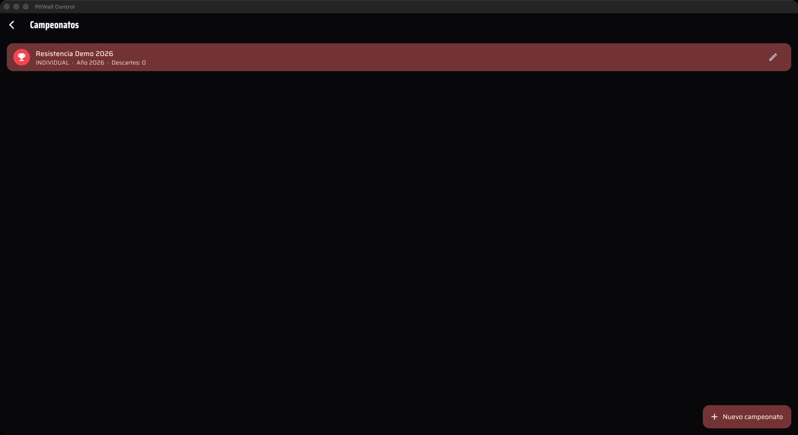
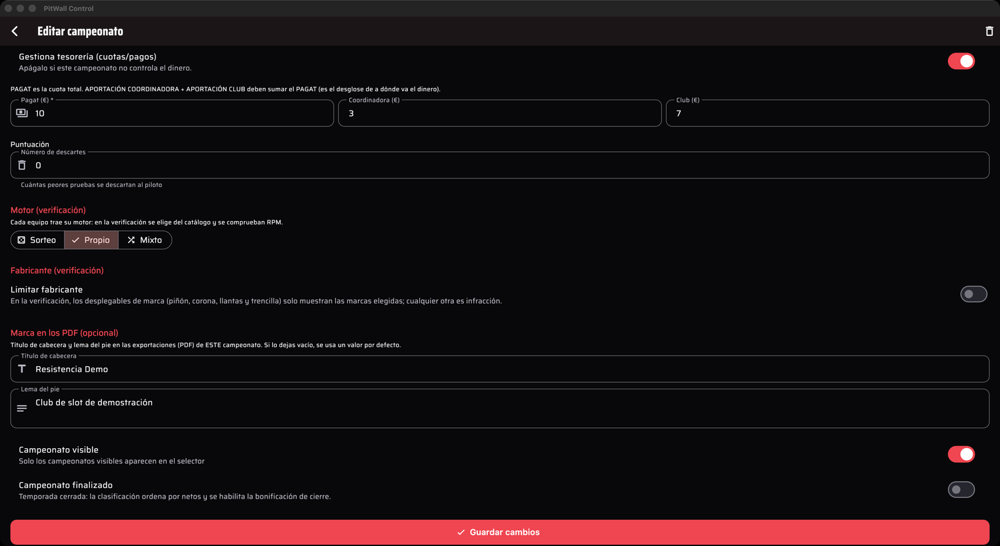
Catàlegs (la teva biblioteca)
- Els catàlegs són les llistes del material permès: cotxes, motors, llantes, engranatges…
- S’omplen una vegada i després surten com a opcions quan verifiques els cotxes.
- Marca a cada fitxa a quines copes serveix; si no té copa, no surt a la verificació.
Veure tots els detalls (per a qui ho vulgui saber tot)
Els catàlegs són les llistes reutilitzables de material homologat. Es mantenen una vegada i alimenten els desplegables de la verificació. Cada pestanya té cercador i, quan s'escau, filtre per copa.
- Cotxes: model, marca, pes mínim, crèdits, copa(es) i una foto de referència (de la càmera o la galeria) per comparar amb el cotxe que lliura l'equip.
- Marques: codi curt i nom (les que surten a pinyó, corona, llandes i trena).
- Llandes: dimensió, tipus per eix (DELANTERA / TRASERA / AMBAS) i copa(es).
- Engranatges: pinyons i corones amb les seves dents, diàmetre i copa(es). Les dents que s'ofereixen a la verificació surten d'aquí.
- Motors: nom, RPM i gauss de referència, i copa(es).
- Bancades i Pneumàtics: amb copa(es).
- Xassís: sense copa; a la verificació surten sempre tots.
- Copes (la llista mestra) i Clubs: llistes de suport.
La copa al catàleg
Al diàleg de nova fitxa / editar tens el selector de copes, i la llista mostra sota de cada fitxa les seves Copes: …. Pots omplir els catàlegs a mà, importar-los per CSV (vegeu Plantilles CSV), en Excel (a baix) o sincronitzar-los amb Google Sheets (vegeu Google Sheets i Drive).
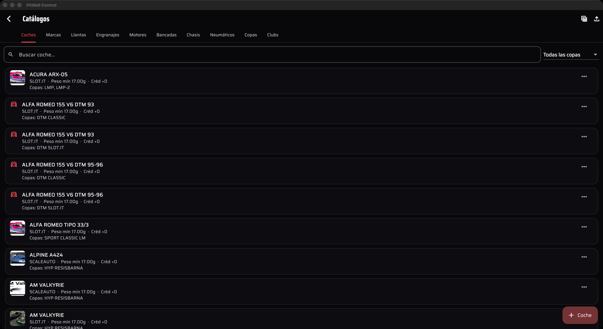
Tot el catàleg en Excel
A dalt a la dreta de Catàlegs, el botó amb icona de taula obre dues accions que treballen sobre tots els catàlegs alhora:
- Exportar-ho tot a Excel: un .xlsx amb una pestanya per catàleg — Coches, Marcas, Llantas, Engranajes, Motores, Bancadas, Chasis, Neumaticos, Copas, Clubs.
- Importar l'Excel editat: li tornes el full i l'app aplica els canvis.
La primera columna de cada pestanya és l'ID: fila amb ID → s'actualitza aquella fitxa; fila sense ID → se'n crea una de nova; fila que esborres del full → es queda a l'app (la importació no esborra mai). La columna Copas va com a text separat per punt i coma (p. ex. GT;GT2). Abans d'aplicar, l'app demana confirmació i, en acabar, resumeix quantes fitxes s'han creat i actualitzat.
Pilots
- Dona d’alta cada pilot una sola vegada: serveix per a tots els campionats.
- A cada campionat té la seva categoria (Platí, Or, Plata o Bronze).
- Si en tens molts, importa’ls d’un Excel amb el botó Importar.
Veure tots els detalls (per a qui ho vulgui saber tot)
El pilot és un mestre únic (nom, telèfon, email) que pot córrer en diversos campionats. Per cada campionat té un perfil propi:
- Categoria (PLATINO · ORO · PLATA · BRONCE), l'escala que fan servir la bonificació de tancament i la promoció entre temporades.
- Crèdits inicials i actuals (si el campionat fa servir crèdits).
- Coordinadora: si tots els pilots d'un equip són de coordinadora, l'equip no paga quota.
Des de Pilots dones d'alta, edites i cerques. Amb el botó Importar portes molts alhora des de CSV, Excel o Google Sheets, i la puntuació prèvia: la puntuació de la temporada anterior dels pilots ja inscrits, que serveix per ordenar les tandes de la primera prova d'un campionat nou. Tan bon punt hi ha resultats propis, mana la classificació real.
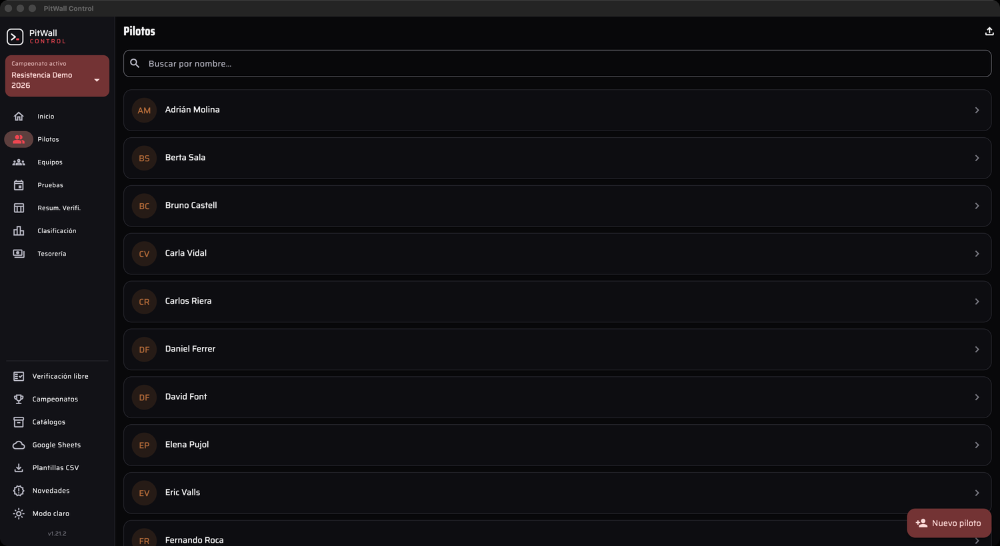
Equips i inscripcions
- Un equip agrupa els pilots que comparteixen cotxe: 1 en individual, 2 en parelles i fins a 6 en 24h.
- Cada equip corre en una copa, que decideix quin material pot fer servir.
Veure tots els detalls (per a qui ho vulgui saber tot)
Un equip agrupa els pilots que comparteixen cotxe i corre en una copa concreta. El nombre de pilots depèn del format:
- Individual: 1 pilot. La pantalla es diu Inscripcions i no demana nom d'equip: es fa servir el del pilot.
- Parelles: 2 pilots.
- 24h: d'1 a 6 pilots; afegeixes i treus places a l'editor.
Els pots crear a mà o importar-los per CSV (la plantilla de resistència admet Piloto 1…5).
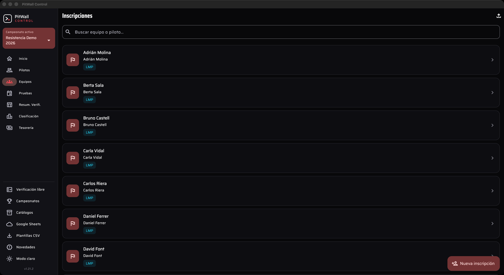
Proves i tandes
- Cada cursa del calendari és una prova. Crea-la amb el seu nom, lloc i data.
- Apunta als inscrits qui hi corre.
- Genera les tandes i Control reparteix els pilots pels carrils.
Veure tots els detalls (per a qui ho vulgui saber tot)
Una prova és cada cita del calendari (nom, seu, data, ordre i estat: programada, en curs o acabada). En obrir-la veus les seves tandes i, a l'esquerra, les opcions de la prova: inscrits, resultats, verificacions, resum de verificacions, editar tandes, sorteig de motors, tresoreria de la prova, PDF de tandes i de verificacions, i l'intercanvi amb PitWall.
- Crea la prova i ordena-la al calendari.
- Inscriu els equips (o pilots) que corren.
- Genera les tandes amb la seva assignació de carrils.
- El dia de cursa, verifica, cobra i ajusta les tandes si cal.
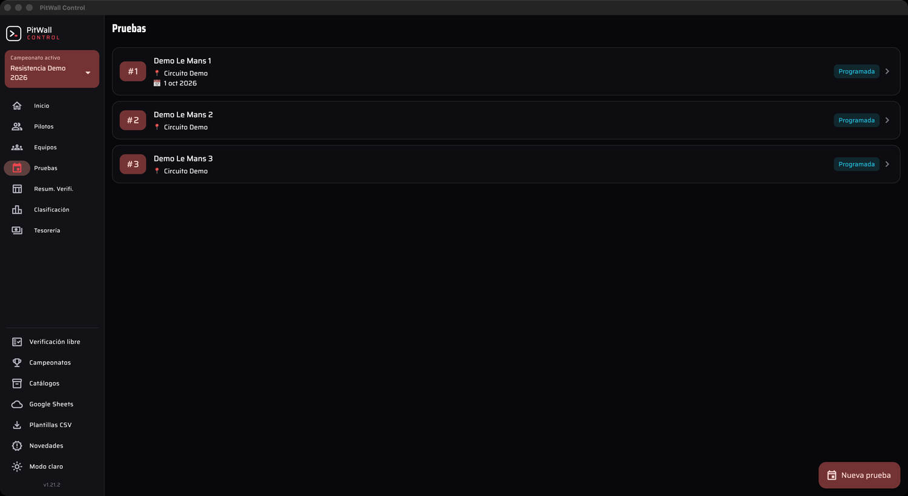
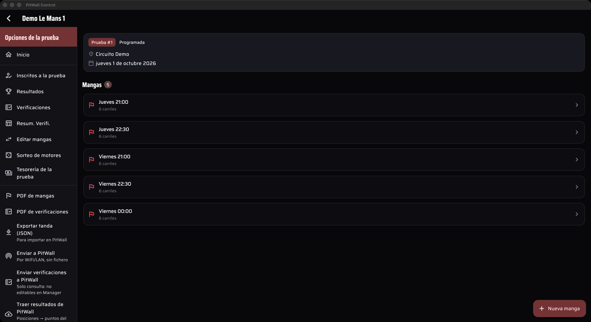
Inscrits
A Inscrits a la prova veus qui corre, amb la seva copa i el seu dia preferit. Pots afegir a mà (botó de persona amb «+», a dalt), importar des de CSV/Excel o Google Sheets i donar de baixa qui no corre (el treu d'Inscrits i de la seva tanda). La copa es desa com a foto fixa d'aquella prova: si després canvia la de l'equip, la prova manté la que va córrer.
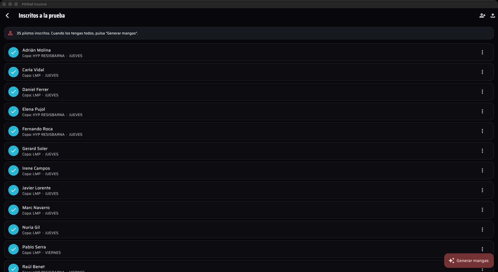
Generar tandes
L'assistent reparteix els inscrits en tandes per dia:
- Carrils de la pista i minuts per carril (calcula la durada real de cada tanda i espacia els horaris suggerits).
- Nombre de tandes: se'n fan tantes com carrils complets es puguin omplir, i el que sobra es reparteix; l'última tanda del dia no es queda mai a mitges.
- Noms i horaris de cada tanda.
- Assignar carril automàticament i assignar pisters (campionats individuals): per punts de més a menys, als carrils 1…N i, si en sobren, descansos D1, D2…; els pisters es reparteixen entre les tandes del mateix dia.
- Vista prèvia abans de crear i opció de substituir les tandes existents.
La tanda, el dia de cursa
El detall de la tanda mostra la graella: cada carril amb el seu pilot, els carrils lliures («Lliure») i, al final, els que encara no tenen carril. Toca un pilot (o «Canviar carril» al seu menú) i surt una quadrícula amb tots els carrils: toca'n un de lliure per moure'l-hi o un d'ocupat per intercanviar-los. També pots renumerar carrils per punts, triar els pisters, treure algú de la tanda i veure un avís si hi ha carrils repetits. A Editar tandes mous pilots d'una tanda a una altra (arriben sense carril, per assignar-l'hi allà).
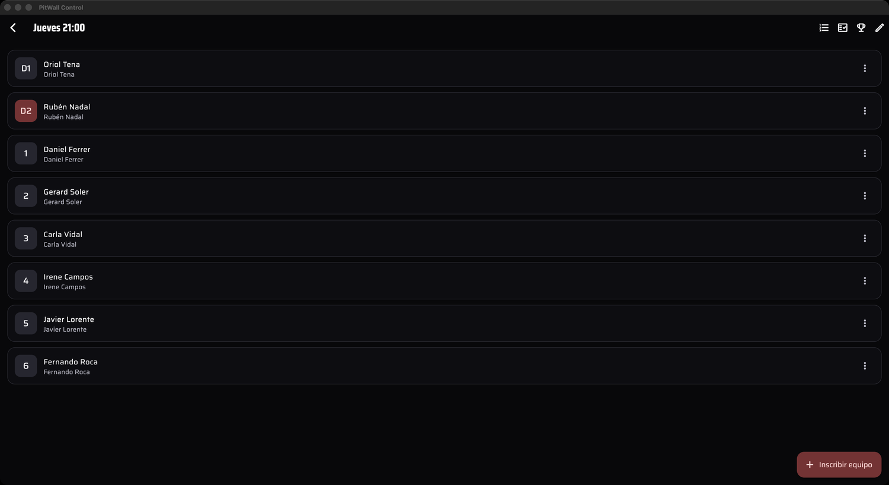
Verificacions
- El dia de cursa, revisa el cotxe de cada equip abans que corri.
- Entra a la prova → Verificacions, tria la tanda i l’equip, i omple cada requadre.
- Verd vol dir que està bé; vermell, que alguna cosa no compleix el reglament.
Veure tots els detalls (per a qui ho vulgui saber tot)
La verificació és el cor del dia de cursa: per cada equip comproves que el seu material compleix les normes abans de validar-lo. Hi entres des de la prova (Verificacions), tries la tanda i l'equip. Cada tanda mostra quantes en porta validades.
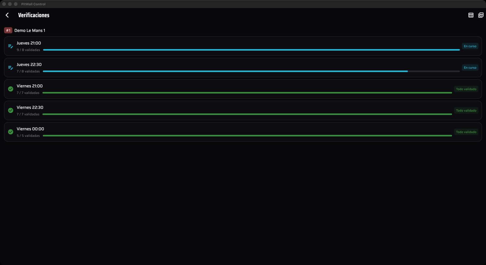
La fitxa de verificació
A dalt, el nom de l'equip i la seva copa (toca-la per canviar-la només en aquesta prova). A sota, el resum del que no compleix i una barra amb els blocs complets i els que falten. Si el campionat gestiona tresoreria, el bloc Tresoreria et deixa cobrar allà mateix, amb el mateix formulari que la tresoreria de la prova.
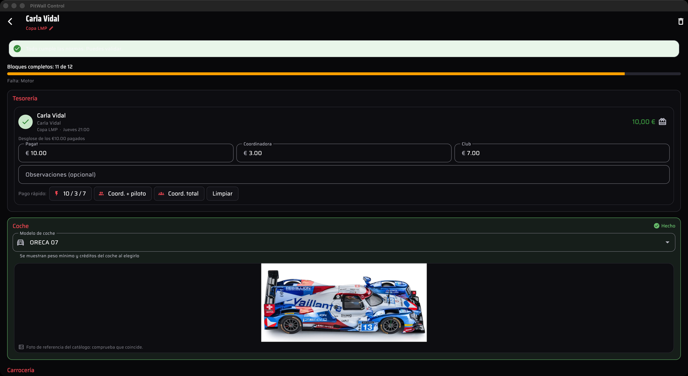
Cada bloc va en un requadre amb el seu estat: ambre «Pendent» si li falta alguna dada, verd «Fet» quan està complet i vermell «Revisar» si alguna cosa és fora de reglament. Els blocs són:
- Cotxe: només els models de la seva copa, amb la foto de referència del catàleg a sota per comparar.
- Carrosseria: pes (amb el mínim del cotxe) i estètica — «Bé» o «Falten peces», amb un text per anotar quines.
- Motor: segons el tipus de motor del campionat. D'organització: el número (amb botó Sortejar). Propi: el motor del catàleg, amb RPM i uMs comprovats en viu contra la seva referència (✓/✗; tots dos són màxims). A més, alçada de motor a pista: conforme / no conforme.
- Amplada d'eix davanter i posterior, contra el màxim de la seva copa (només compta si la copa té màxim).
- Llanda davantera i posterior: marca i dimensió, filtrades per copa i per eix.
- Pinyó i corona: marca, dents (les del catàleg d'engranatges de la seva copa), diàmetre i material — pinyó PL / ERG / LAT / ACR / ALU; corona PL / MET.
- Bancada, xassís, pes del cotxe sencer i altres (pneumàtic, trena, suspensió).
- Observacions i fotos (fins a 4), opcionals.
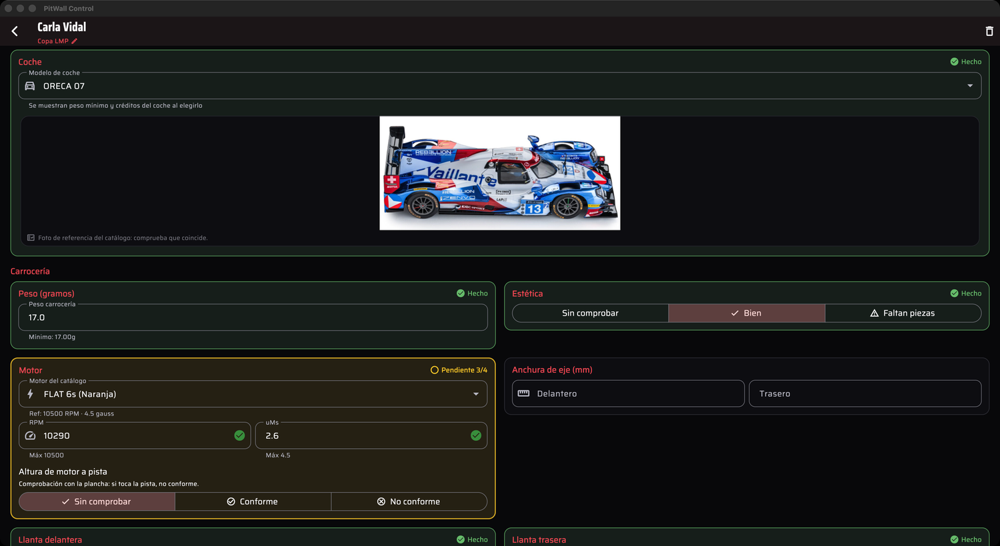
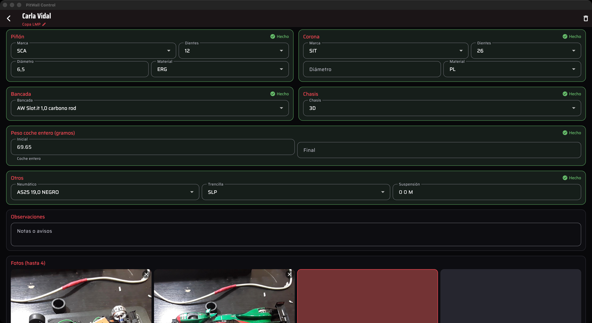
Infraccions i validació
L'app avisa en vermell del que és fora de reglament: pes per sota del mínim, eix per sobre del màxim, RPM o uMs per sobre de la referència, motor que toca la pista, marca no permesa (amb limitar fabricant), peces que falten… La verificació s'autodesa com a esborrany a cada canvi, així que pots tenir-ne diverses obertes alhora. Quan tot compleix, la valores.
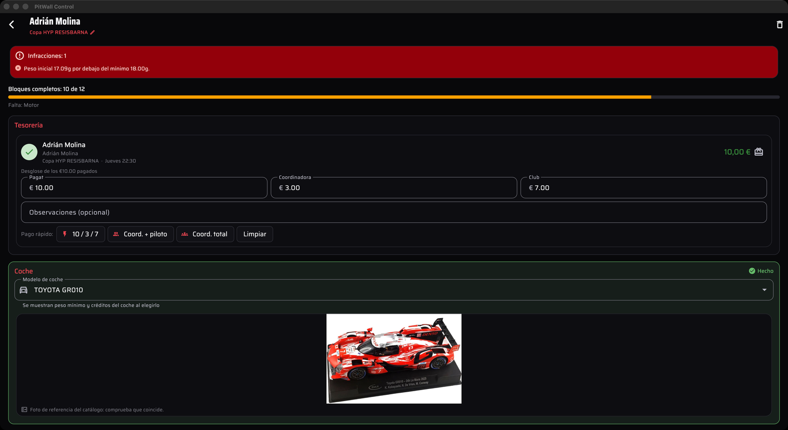
Resum en graella
Resum de verificacions (a la barra lateral, a la prova o amb el botó de graella de Verificacions) mostra totes les verificacions d'una prova en una taula tipus full de càlcul, només de consulta: una fila per inscrit amb estat, copa, cotxe, pesos, motor, eixos, transmissió, llandes, bancada, xassís, pneumàtic, carrosseria i observacions. El que és fora de reglament surt en vermell (en passar-hi el ratolí es veu el motiu). Té cercador i filtres (amb infracció, sense verificar, en esborrany) i s'exporta a PDF i a Excel.
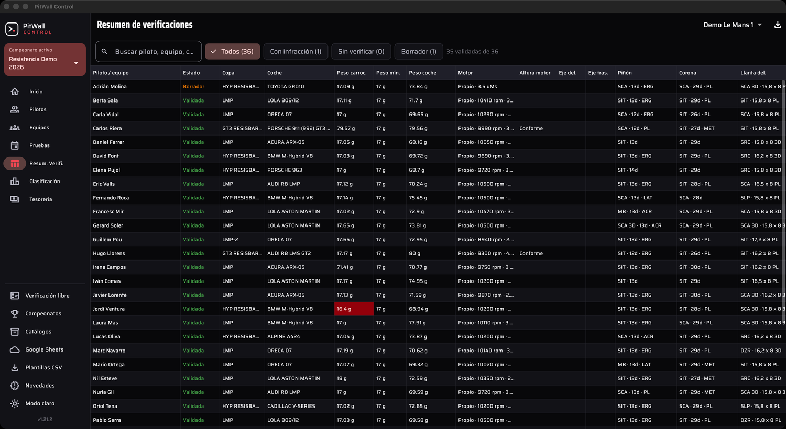
Verificar en equip
- Si verifiqueu diverses persones alhora, cadascuna pot fer servir el seu propi aparell.
- Tothom ha de partir de la mateixa còpia de dades i estar a la mateixa wifi (no cal internet).
- A la prova, obre Verificar en equip, posa la mateixa clau a tots i connecta’ls.
Veure tots els detalls (per a qui ho vulgui saber tot)
Quan hi ha diversos verificadors, cada un pot treballar en el seu propi dispositiu (Mac, Windows o Android) sobre la mateixa prova alhora. Cada Control desa al seu dispositiu i es passen els canvis per la wifi. No cal internet: serveix un router sense connexió o el punt d'accés d'un mòbil.
Abans de l'esdeveniment
- Tots parteixen de la mateixa còpia de dades: campionat, prova, tandes i equips. El més fàcil és restaurar a cada dispositiu la mateixa còpia de Google Drive.
- Tots amb la mateixa versió de PitWall Control (si no, la sincronització avisa i no es fa).
- L'hora automàtica activada a tots els dispositius.
Connectar
A la prova, obre Verificar en equip (al menú de la prova o amb la icona de sincronitzar de Verificacions). A cada dispositiu:
- Posa-li un nom diferent: «Taula 1», «Tauleta boxes»…
- Escriu la clau de l'esdeveniment, la mateixa a tots.
- Encén Connectar amb altres Controls.
Es troben sols a la xarxa i apareixen a Controls a la xarxa, amb l'hora de l'última sincronització i el que ha arribat. Si algun no surt (hi ha routers que no ho permeten), afegeix-lo amb el botó d'enllaç escrivint l'adreça que es veu sota «Visible com a» a la seva pantalla. Amb Sincronitzar automàticament es passen els canvis cada 20 segons; també pots prémer Sincronitzar ara. La icona de Verificacions mostra quants Controls hi ha connectats.
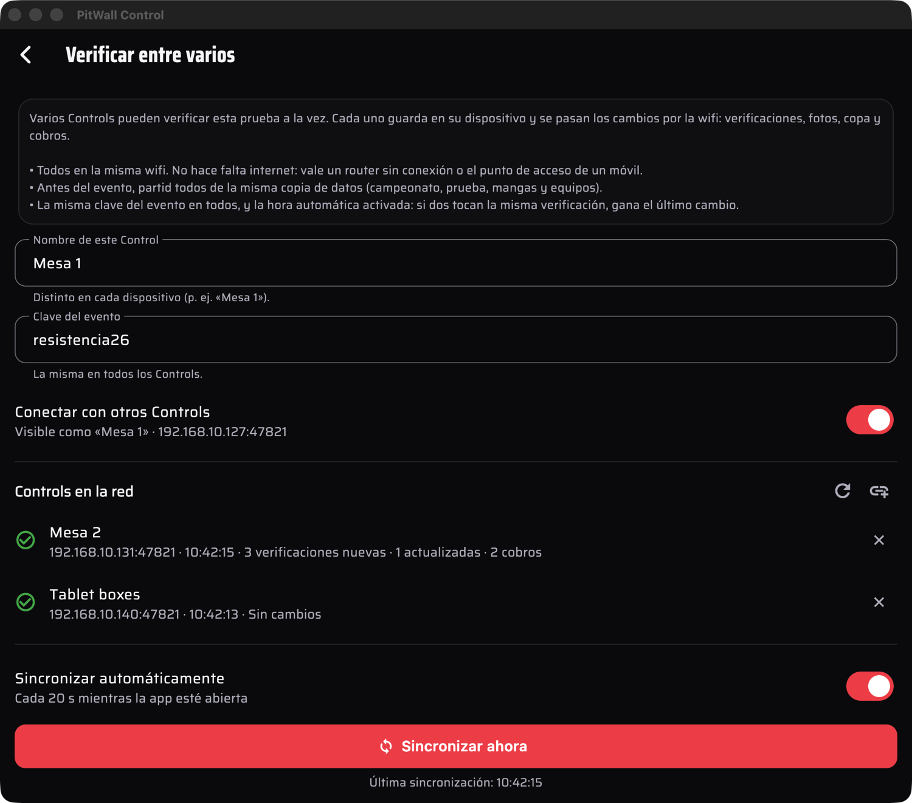
Què es comparteix
- Les verificacions, amb les seves fotos, i els esborrats.
- La copa de cada equip a la prova.
- Els cobraments de la tresoreria, inclosos wildcard i «Coord. total».
Els canvis passen d'un Control a un altre encara que aquests dos no s'hagin sincronitzat directament. Els crèdits no es descompten dues vegades: cada Control calcula els seus en rebre una verificació validada.
L'app ha d'estar oberta a cada dispositiu (a Android, si passa a segon pla, deixa de compartir). La verificació lliure no se sincronitza. La primera vegada, Windows demana permís del tallafocs i macOS el de xarxa local: accepta'ls.
Classificació
- La classificació es calcula sola amb els resultats de cada prova.
- Amb la taula de punts decideixes quants punts dona cada posició.
- Hi ha una classificació general i una per cada copa. La pots treure en PDF.
Veure tots els detalls (per a qui ho vulgui saber tot)
La classificació es calcula amb els resultats de les proves i les regles del campionat:
- Taula de punts per posició, pròpia de cada campionat. S'edita des del botó Taula de punts: quantes posicions puntuen i quants punts dona cada una (o restaurar els valors per defecte).
- Descarts: resultats pitjors que no compten.
- General i una pestanya per copa. La columna Copa mostra la copa amb què va córrer el pilot.
També pots omplir-la a mà o importar-la, i exportar-la en PDF.
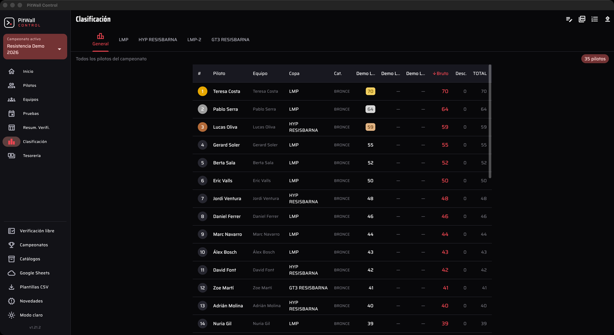
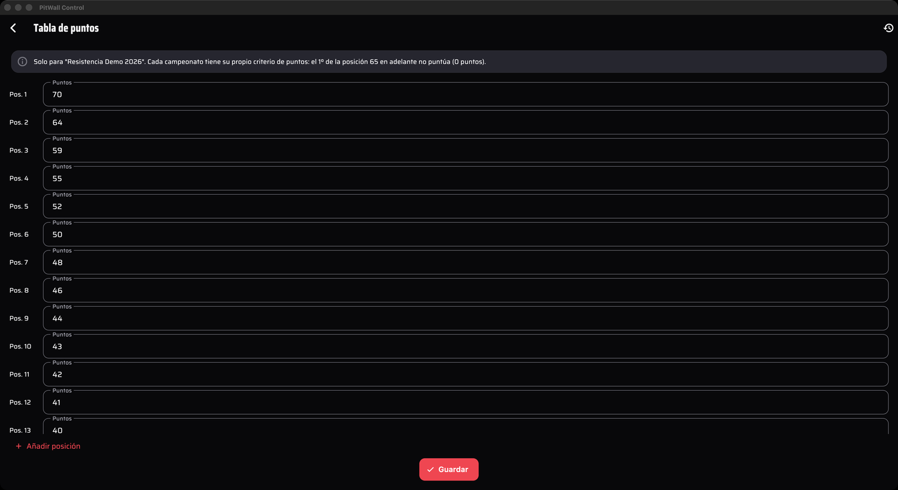
Tresoreria
- Si cobreu quotes, cada equip paga a cada prova.
- Cobra a la tresoreria de la prova o a la mateixa verificació de l’equip, amb el pagament ràpid.
- La pantalla Tresoreria mostra el que s’ha cobrat, les despeses i el saldo.
Veure tots els detalls (per a qui ho vulgui saber tot)
Si el campionat fa servir tresoreria, cada equip paga una quota per prova (el Pagat), repartida entre coordinadora i club. La pantalla Tresoreria mostra el balanç del campionat, el que s'ha recaptat a cada prova i els moviments extres (patrocinis, despeses de material… amb el botó «Moviment»).
- Repartiment: canvia el Pagat i quant va a cada part (es veu el % de cada una). Pots aplicar-ho també als pagaments ja cobrats: es reparteix de nou el que va pagar cada equip, sense canviar el que s'ha cobrat.
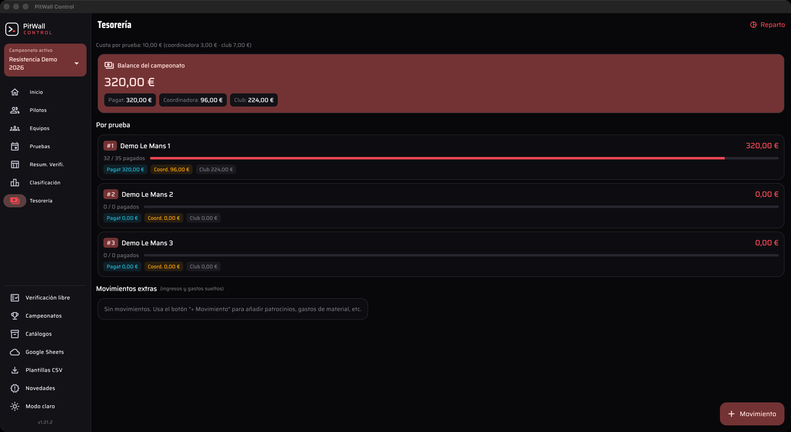
Cobrar en una prova
A Tresoreria de la prova (o directament a la verificació de cada equip) cobres amb:
- Pagat / Coordinadora / Club. Si escrius només el Pagat, el desglossament es reomple amb la proporció del campionat; si no quadra, surt un avís amb botó Repartir.
- Pagament ràpid: la quota completa d'un toc; Coord. + pilot (un pilot és de coordinadora: paga la meitat); Coord. total (tots són de coordinadora: no paga); Netejar.
- Wildcard (icona de regal): convidat, no paga. Els qui no paguen no compten com a pendents: el comptador mostra «X / Y pagats · N no paguen».
- Un cercador fix a dalt per trobar de pressa qui ha de pagar.
Es desa en sortir de cada camp. La tresoreria de la prova i la verificació mostren sempre el mateix.
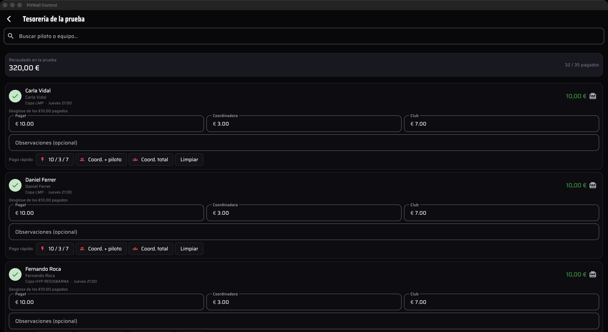
Crèdits i tancament
- Els crèdits són el handicap del campionat: pugen o baixen segons els resultats de cada pilot.
- A final de temporada, revisa primer les categories i després aplica la bonificació de tancament, en aquest ordre.
Veure tots els detalls (per a qui ho vulgui saber tot)
El sistema de crèdits és el handicap del campionat: cada pilot arrenca amb uns crèdits que pugen o baixen segons el resultat. Des de Crèdits veus el saldo i els moviments (cada un amb la seva descripció), pots ajustar a mà, exportar en PDF o CSV i gestionar el tancament.
Bonificació de tancament
En acabar la temporada s'aplica una bonificació segons la categoria del pilot i el nombre de curses disputades (trams configurables). El moviment queda descrit (p. ex. «bonificació per 6 curses»).
Revisió de categories
Abans de finalitzar, la Revisió de categories permet decidir pilot a pilot si puja, baixa o es manté a l'escala BRONCE→PLATA→ORO→PLATINO. Aquesta categoria es fa servir per a la bonificació i com a categoria inicial en importar al campionat següent.
Sorteig de motor
- Si el motor el posa l’organització, Control sorteja un número per a cada equip.
- Fes-ho des de la prova → Sorteig de motors, equip per equip o tots de cop.
Veure tots els detalls (per a qui ho vulgui saber tot)
Si el campionat és de motor de Sorteig o Mixt i té configurat el rang de números, Control sorteja per a cada equip un número dins del rang, descomptant els ja assignats a la prova. Des de Sorteig de motors (a la prova) sorte ges equip a equip o Sortejar restants de cop, i a la pestanya Números veus quin número té cada un. També es pot sortejar des de la mateixa verificació.
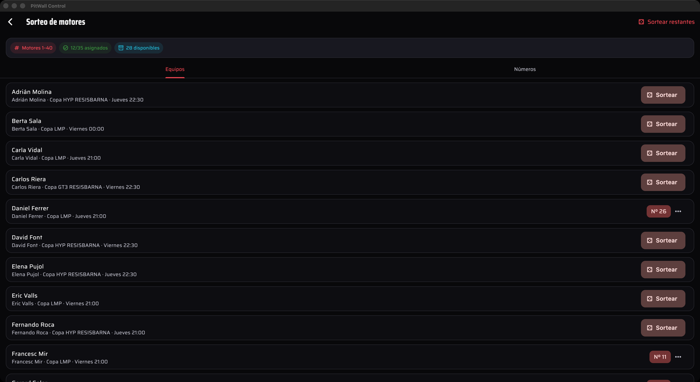
Verificació lliure
- Serveix per verificar cotxes sense muntar un campionat: una cursa solta o un control al club.
- Obre Verificació lliure, crea una sessió i afegeix-hi els participants.
- Quan acabis, treu-la en PDF o en Excel amb fotos.
Veure tots els detalls (per a qui ho vulgui saber tot)
Per verificar cotxes sense campionat ni prova: una cursa esporàdica, un control al club o qualsevol altra cita. S'obre des de Verificació lliure a la barra lateral (o des de l'inici, encara que no tinguis campionats).
- Cada sessió té nom, lloc i data, i el seu propi reglament: copes, amplada d'eix per copa, limitar fabricant i tipus de motor (Sorteig / Propi / Mixt, amb el seu rang). Una sessió nova comença en blanc, igual que un campionat.
- Participants: afegeix-los un a un (pilot amb autocompletat, segon pilot i equip opcionals, i copa) o importa'ls des d'un fitxer CSV / Excel o des de Google Sheets. L'importador reconeix les columnes sol, té copa per defecte per a les files sense copa i vista prèvia per desmarcar files. Mantén premut un participant per treure'l.
- La verificació és la mateixa de sempre: autodesat, fotos, sorteig, validació per copa.
- Exportar: en PDF o en Excel amb fotos.
Les sessions no fan servir crèdits ni tresoreria, no s'envien a PitWall Manager i no apareixen entre els campionats.
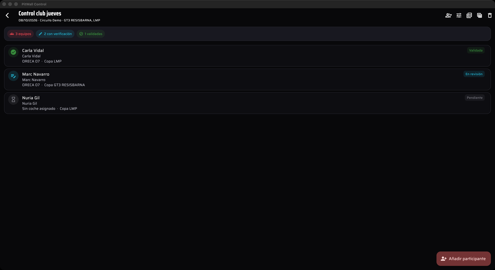
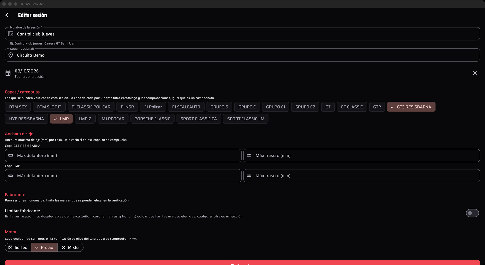
Excel amb fotos
El .xlsx té una fila per participant amb les columnes del resum de verificacions (el que és fora de reglament en vermell i una columna amb els motius) i, al final de la fila, la foto del cotxe al catàleg («Foto catálogo») seguida de totes les fotos de la verificació, com a miniatures dins de la cel·la. Es veu bé a Excel, LibreOffice i al mòbil (iPhone, iPad, Android).
Google Sheets i Drive
- Control pot llegir els teus fulls de Google i desar una còpia de les dades a Google Drive.
- És útil perquè diverses persones treballin amb les mateixes dades.
- Cal connectar-lo una vegada; l’apartat explica com, pas a pas.
Veure tots els detalls (per a qui ho vulgui saber tot)
Control pot treballar amb els teus fulls de Google i desar còpies a Google Drive. Primer, a Google Sheets, enganxes les credencials del teu projecte de Google Cloud (el botó «Com aconseguir-les» et guia) i connectes el teu compte. Control només demana llegir els teus fulls i crear o modificar el seu propi fitxer de còpia; no toca cap fitxer teu.
- Catàlegs: vincules cada catàleg amb la seva pestanya. Actualitzar des de Drive porta les dades i Pujar al Sheet envia les teves (amb revisió abans d'esborrar). Si el full té una columna ID, les files s'aparellen per aquesta en lloc de pel nom.
- Fotos de cotxes: una columna FOTO amb l'enllaç de Drive de la imatge. En actualitzar es descarrega la foto; en pujar, les fotos que només són a l'app es pugen a Drive i s'hi escriu l'enllaç.
- Pilots, equips i inscripcions també es poden importar des d'un full.
- Còpia compartida a Drive: puja o baixa la base de dades (amb les fotos de les verificacions) per treballar en diversos dispositius, també des d'Android. És la manera més fàcil que tots parteixin de la mateixa còpia abans de verificar en equip.
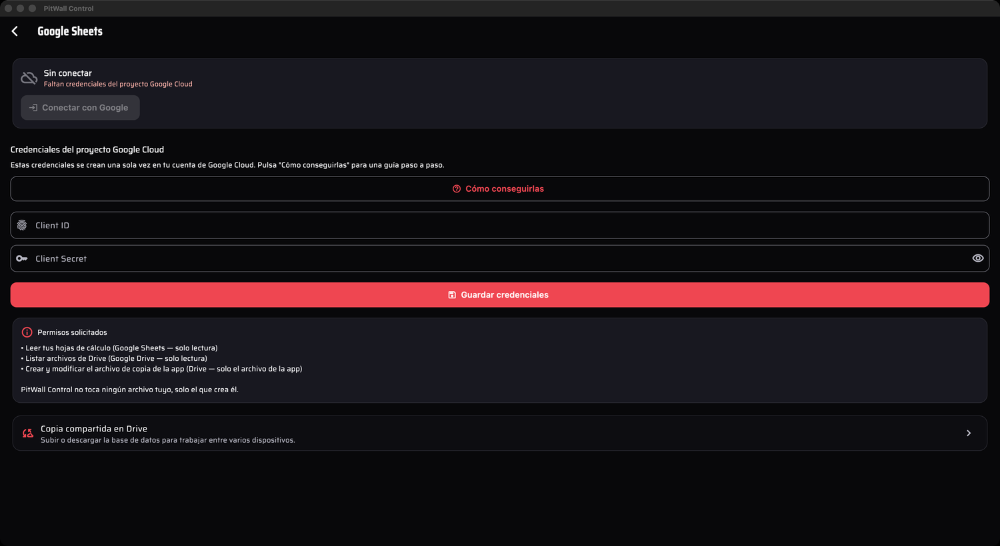
Aconseguir les credencials de Google, pas a pas
Només es fa una vegada, és gratis i no demana targeta. Necessites un compte de Google (el que té els teus fulls i el teu Drive) i uns 10 minuts. Els noms dels menús són els de Google Cloud en espanyol; si el tens en un altre idioma, s'assemblen.
- Entra a Google Cloud Console. Obre console.cloud.google.com amb el teu compte de Google i accepta les condicions si és la primera vegada.
- Crea un projecte. A dalt, al costat del logotip de Google Cloud, prem el selector de projectes → Projecte nou. Nom: PitWall Control. Prem Crea i comprova que quedi seleccionat a dalt.
- Activa les dues API. Menú ☰ → APIs i serveis → Biblioteca. Cerca Google Sheets API i prem Habilita. Torna a la biblioteca, cerca Google Drive API i prem també Habilita.
- Configura la pantalla de consentiment. Menú ☰ → APIs i serveis → Pantalla de consentiment d'OAuth (Google la diu Google Auth Platform) → Comença. S'obre un assistent de 4 passos:
- Informació de l'app: nom PitWall Control i el teu correu com a correu d'assistència → Següent.
- Públic: tria Usuaris externs → Següent. «Intern» només val per a comptes d'empresa (Google Workspace) i amb un Gmail normal no es pot fer servir.
- Informació de contacte: el teu correu → Següent.
- Finalitza: marca la casella de la política de dades → Continua i després Crea.
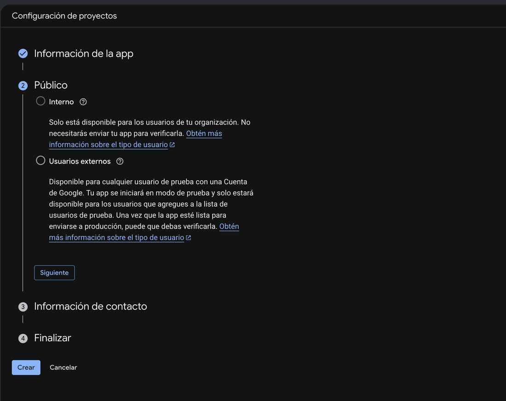
Pas 2 de l'assistent: tria «Usuaris externs» i prem «Següent». - Afegeix el teu compte com a usuari de prova. Al menú lateral, Públic → secció Usuaris de prova → Add users. Escriu el correu de Google amb el qual connectaràs Control (i el de qualsevol altra persona que s'hi hagi de connectar amb el seu compte) i prem Desa. Si et saltes aquest pas, Google bloquejarà l'accés (mira «Si surt l'error 403», més avall).
- Crea el client OAuth. Menú lateral → Clients (o APIs i serveis → Credencials) → Crea un client. Tipus d'aplicació: Aplicació d'escriptori. Nom: PitWall Control Desktop. Prem Crea.
- Copia l'ID i el secret. Surt un quadre amb l'ID de client (acaba en .apps.googleusercontent.com) i el Secret de client. Copia'ls i prem Baixa JSON per desar-los: Google només mostra el secret en aquest moment.
- Enganxa'ls a Control i connecta. A la pantalla d'inici obre Google Sheets, enganxa el Client ID i el Client Secret i prem Desa les credencials. Després prem Connecta amb Google: s'obre el navegador, tria el compte que vas afegir al pas 5 i, si surt «Google no ha verificat aquesta aplicació», prem Configuració avançada → Ves a PitWall Control (no segur). Marca tots els permisos i prem Continua. En tornar a Control ha de dir «Connectat».
Si surt l'error 403: access_denied
És la fallada més habitual. Google mostra «Accés bloquejat: PitWall Control no ha completat el procés de verificació de Google». Vol dir que el compte amb què has entrat no és a la llista d'usuaris de prova.
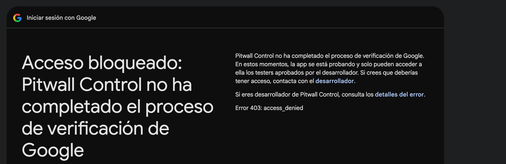
S'arregla en un minut:
- Ves a Públic → Usuaris de prova → Add users, afegeix aquell compte exacte i desa (pas 5). O bé prem Publica l'aplicació i ja no cal la llista.
- Torna a Control i prem una altra vegada Connecta amb Google.
- invalid_client: l'ID o el secret estan mal copiats o amb un espai de més. Copia'ls de nou del JSON descarregat.
- «API has not been used in project…»: falta habilitar Sheets o Drive (pas 3).
- Et demana connectar una altra vegada cada setmana: l'aplicació segueix en Prova; publica-la (avís del pas 8).
Plantilles CSV
- A Plantilles CSV descarregues plantilles a punt per omplir: pilots, equips, inscripcions i catàlegs.
- Omple-les i importa-les des de la seva secció.
Veure tots els detalls (per a qui ho vulgui saber tot)
Des de Plantilles CSV descarregues les plantilles a punt per omplir i importar: pilots, equips (parelles i resistència, amb Piloto 1…5), inscripcions a una prova, participants de verificació lliure i cada catàleg. Omples el fitxer, l'importes des de la seva secció i l'app reconeix les columnes.
Per corregir en bloc el que ja tens als catàlegs, la via còmoda és Tot el catàleg en Excel.
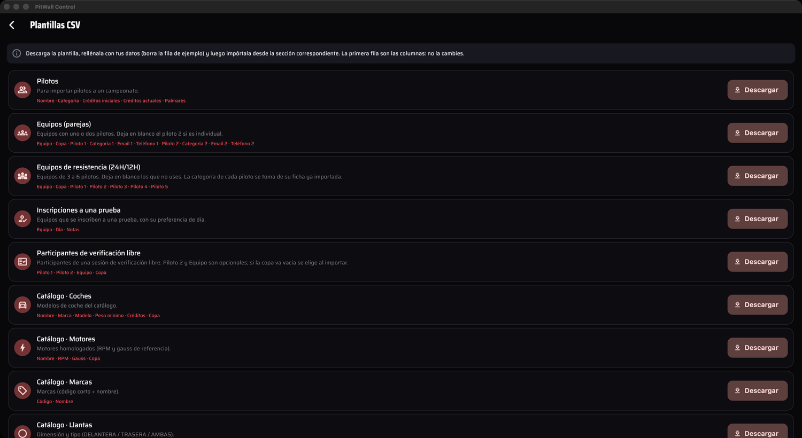
Exportar (PDF i Excel)
- Pots treure en PDF les tandes, les verificacions, la classificació i els crèdits, a punt per imprimir.
- En exportar tries l’idioma del document.
Veure tots els detalls (per a qui ho vulgui saber tot)
- PDF: tandes, verificacions d'una prova o sessió, resum en graella, classificació i crèdits. En exportar tries l'idioma del document (espanyol, català, anglès, italià o francès) i s'aplica la marca del campionat a la capçalera i al peu. Cada PDF cap en un sol full (A4 → A3 si cal) per imprimir-lo còmode.
- Excel: el catàleg complet, el resum en graella i la verificació lliure amb fotos.
- CSV: crèdits.
Enviar a PitWall / portar resultats
- Control i PitWall Manager es passen les dades per no escriure res dues vegades.
- Amb Enviar a PitWall envies les tandes a Manager; necessites el PIN que surt a la pantalla d’importar tanda de Manager.
- En acabar la cursa, porta els resultats de tornada a Control. Tots dos han d’estar a la mateixa wifi.
Veure tots els detalls (per a qui ho vulgui saber tot)
PitWall Control es comunica amb el cronometrador PitWall per no teclejar dues vegades: li envia la prova muntada i després porta els resultats. Totes dues apps han d'estar a la mateixa xarxa LAN/WiFi.
Triar el PitWall
Els tres enviaments fan servir el mateix selector: durant uns segons veus «Cercant…» i apareixen els PitWall de la xarxa (per Bonjour/mDNS i provant la xarxa local directament, així que funciona encara que el router bloqui els anuncis). Pots prémer Tornar a cercar o escriure l'adreça IP:port a mà. Funciona a macOS, Windows i Android; a Linux la cerca automàtica no està disponible i cal escriure l'adreça.
Enviar la tanda (anada)
Cada tanda viatja cap a PitWall amb cada equip al seu carril i els descansos (D1…Dk) col·locats i rotant. Dues vies:
- Exportar tanda (JSON): un fitxer que puges a PitWall (Curses → Importar tanda). En exportar et pregunta si la cursa té pole.
- Enviar a PitWall (per xarxa): tries el PitWall i introdueixes el PIN d'emparellament que mostra la pantalla Importar tanda de PitWall.
Portar els resultats (tornada)
En acabar, a la prova prems Portar resultats de PitWall: tries el PitWall i la cursa, revises a la previsualització com s'han aparellat els equips pel nom i apliques. Es desa la posició de cada equip a la classificació final de la cursa; els punts els posa Control amb la seva taula. També pots importar els resultats des d'un fitxer de cronometratge a Resultats de la prova.
Enviar les verificacions
Enviar verificacions a PitWall envia les dades del que s'ha verificat (pesos, motor, pinyó, corona, llandes, validat, observacions…), sense les fotos, perquè es vegin dins de la cursa. Mateix camí: PitWall, PIN i la cursa que correspon, que Control recorda per als reenviaments.
Glossari
- Campionat: el contenidor de la temporada (format, copes, regles, tipus de motor, mòduls).
- Copa / categoria: la classe en què corre un equip. Filtra els catàlegs i agrupa la classificació.
- Format: Individual (1 pilot), Parelles (2) o 24h (fins a 6).
- Catàleg: biblioteca de material (cotxes, marques, llandes, engranatges, motors, bancades, xassís, pneumàtics). Una fitxa sense copa no apareix a la verificació.
- Tipus de motor: Sorteig (de l'organització), Propi (de l'equip) o Mixt (es tria a cada verificació).
- Limitar fabricant: només es permeten les marques triades a pinyó, corona, llandes i trena.
- Prova: cada cita del calendari; conté inscrits i tandes.
- Tanda: cada rotació de la prova amb la seva graella de carrils; D1, D2… són descansos.
- Pisters: els pilots d'una altra tanda que fan de comissaris de pista.
- Verificació: comprovació del material d'un equip abans de validar-lo, per blocs.
- Resum de verificacions: totes les verificacions d'una prova en una taula, amb el que és fora de reglament en vermell.
- Verificació lliure: sessió de verificació sense campionat ni prova, amb el seu propi reglament.
- Verificar en equip: diversos Controls verificant la mateixa prova alhora, sincronitzats per wifi (sense internet).
- Foto de referència: la imatge del cotxe al catàleg, per comparar amb el que lliura l'equip.
- Pagat: la quota total per prova; es reparteix entre coordinadora i club.
- Wildcard / Coord. total: equips que no paguen en aquella prova (convidat / tots de coordinadora).
- Crèdits: sistema d'handicap; pugen o baixen segons el resultat.
- Bonificació de tancament: crèdits que se sumen al final segons categoria i nombre de curses.
- Escala de categories: BRONCE · PLATA · ORO · PLATINO.
- Descarte: pitjor resultat que no compta per a la classificació.
- Puntuació prèvia: punts de la temporada anterior per ordenar les tandes de la primera prova.
- Tanda exportada: la prova empaquetada (pitwall.tanda/v1) que s'envia a PitWall.
- PIN d'emparellament: el codi que mostra PitWall i que Control demana per enviar per xarxa.
- Marca: títol i lema del campionat als PDF.